蒹葭苍苍，白露为霜。所谓伊人，在水一方。
蒹葭萋萋，白露未晞。所谓伊人，在水之湄。
寿桃湖的岸线在深秋显得格外安静。芦苇偏灰，湖水偏蓝，草地收敛了盛夏的颜色；深青的衣装因此并不夺目，却在层层冷色之间留下稳定的重心。
这一组照片不急于讲述一个完整的故事。铜镜像一次回望，剑让风声有了方向，团扇与长卷把动作放慢。最后出现的面具、红纱与油纸伞，则让原本平静的湖岸短暂地进入戏中。它们并非要解释人物，而是让人物在不同的物件与光线里，显出几种彼此相连的状态。
镜头始终留出足够的空间给芦苇、湖面与树林。冷灰青是环境的基调，肤色与红、粉的道具则只保留轻微的温度。于是，这一段秋日湖岸不显得遥远，也不必刻意怀古；它只是让人看见，一位行经水边的人，如何在风里停留。
ENGLISH
At Shoutao Lake, late autumn quiets the shoreline. The reeds turn grey, the water blue, and the grass lets go of summer’s color. Against these restrained tones, the deep teal of the dress does not demand attention; it simply gives the frame its center.
This series does not hurry toward a complete story. The mirror suggests a glance back. The sword gives the wind a direction. A fan and a scroll slow the movement down. Later, a mask, red gauze, and a paper umbrella briefly draw the quiet shore into a more theatrical space. These objects are not explanations of the figure, but occasions to see her in connected states of stillness, motion, and pause.
The photographs leave room for reeds, water, and trees. Cool blue-grey carries the setting, while skin and the small notes of red and pink keep a measured warmth. What remains is neither a historical scene nor a fantasy made explicit, but a person by the water, staying for a moment in the wind.
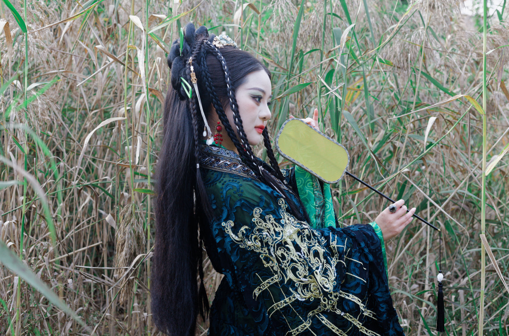
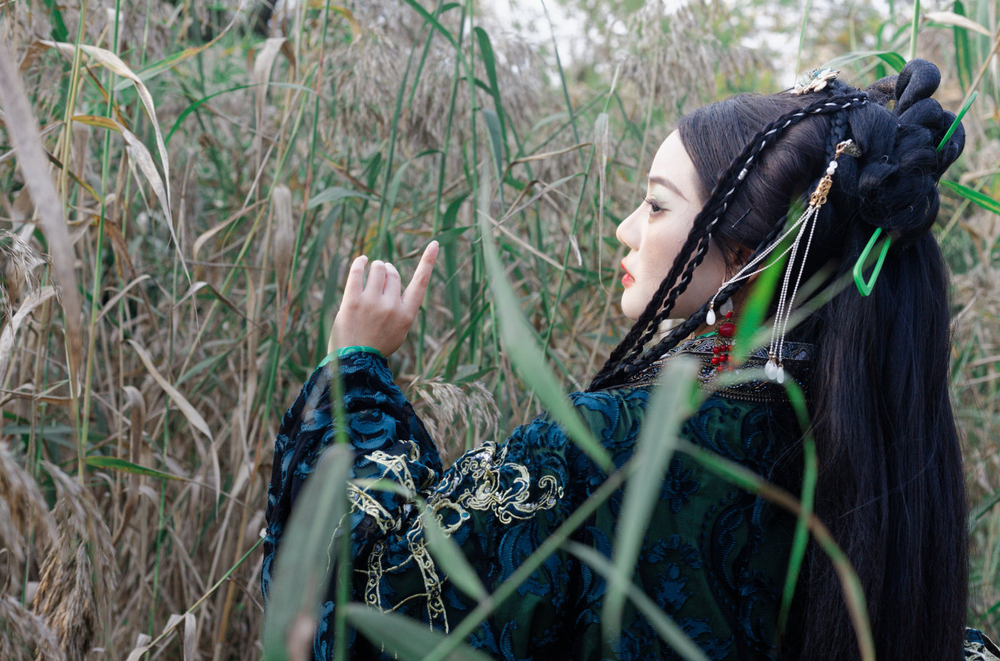
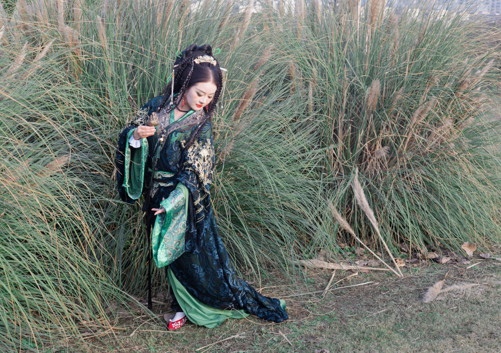

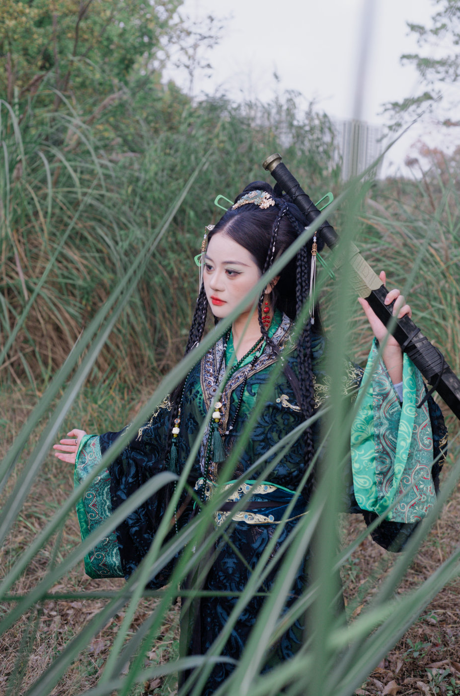
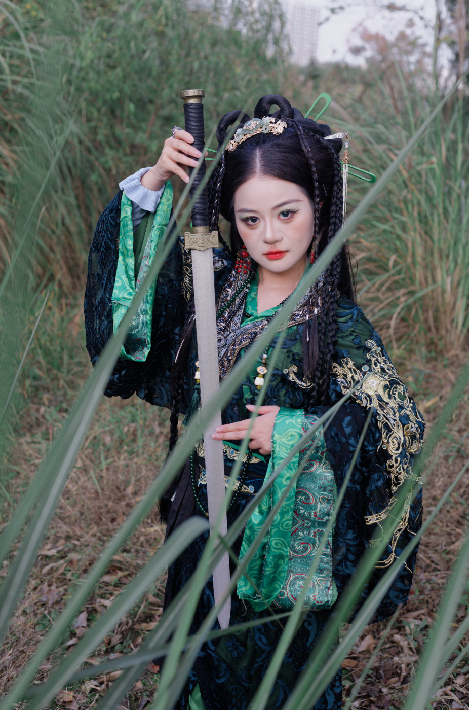
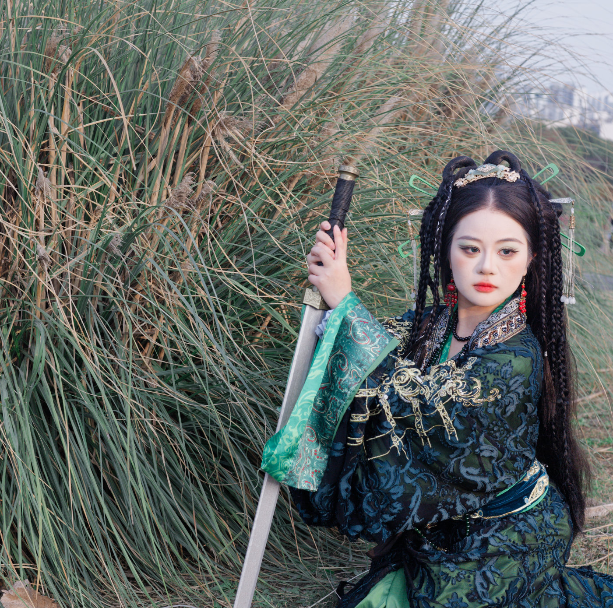
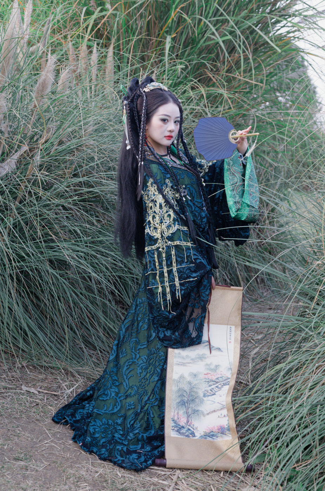
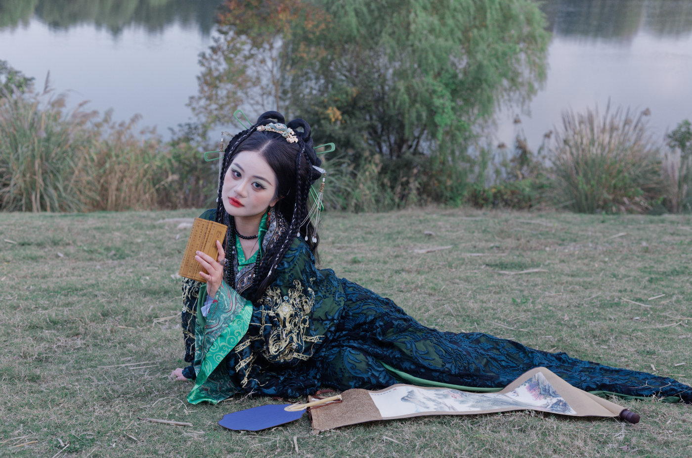
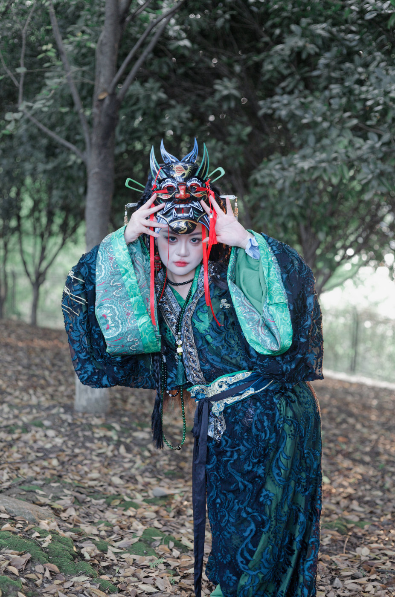
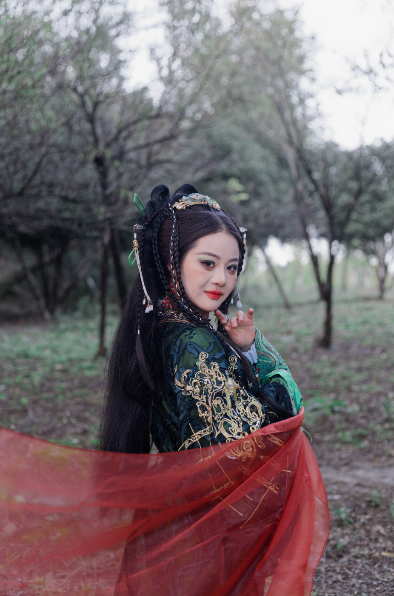
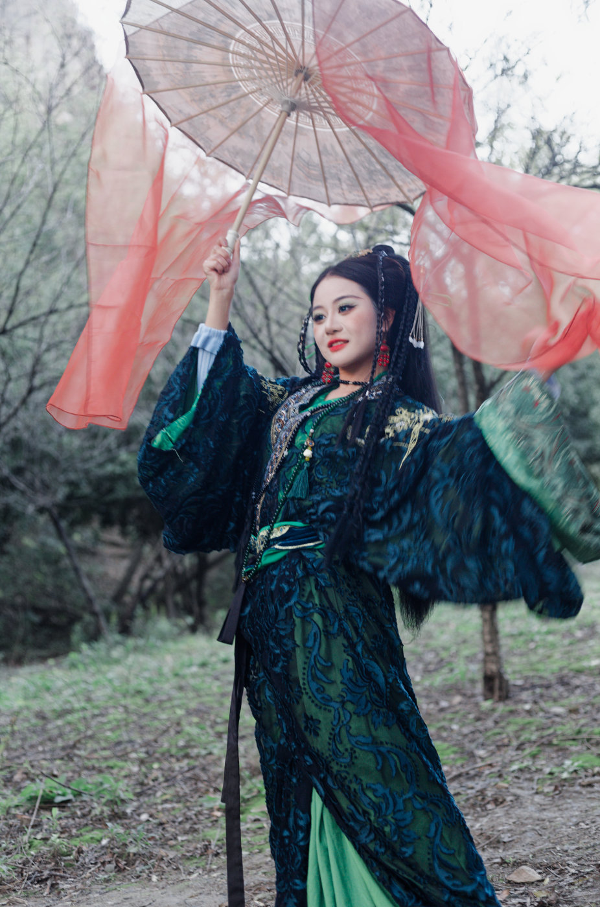